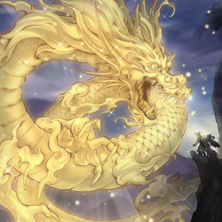

용사가 없을 때도 다소의 불안정성을 감수하고 로즈+천위의 형태로 쓰이던 덱이었고, 용사가 발매된 이후로는 이쪽으로 넘어왔다. 사실상 용병인 용사에 더해 이것저것 환룡족 파워 카드들을 다 섞어넣은 굿 스터프 덱이다. 이 때문에 부르는 이름도 천위 gs등 다양하다. 로즈 드래곤+천위+룡성+용사를 기본 구성으로 하고 크리스트론-하리파이버를 사용하기 위해 단짝 친구인 제트 싱크론+ 환상수기 오라이온과 환상수기 아우로라돈을 투입한 뒤 아크네메시스 프로토스를 뽑아오기 위해 상검에서 태아와 용상검현을 빌려온 잡다한 구성이 기본 축이다. 여기에 여러 전개 보조 카드나 패트랩을 추가하는 정도.
일단 레드 로즈+7렙이 통과되는 순간 바로네스의 1 퍼미션을 장전한 상태로 카드 추가 소모 없이 하리파-아우로라돈이 통과되기 때문에 선턴에 4개 이상의 퍼미션을 장전한 막강한 필드를 구축할 수 있다. 혹은 다수의 7렙 채용을 살려 No.42 스타쉽 갤럭시 토마호크로 전개를 시작할 수도 있다.[24] 때문에 대부분의 용사 채용 덱은 그리폰라이더를 한 장만 채용하지만 이 덱은 공교롭게도 그리폰라이더가 7렙이기 때문에 두세장 채용하는 리스트도 있다. 천위 효과 발동에 체인을 걸어 그리폰라이더 특소 효과를 발동하면 둘 다 필드에 안착시킬 수 있다.
기존 천위로즈와의 가장 큰 차이점은 높아진 73광땡 성공률로, 무조건 레드 로즈를 패에 잡아야 하는 천위로즈와 달리 이쪽은 7레벨과 하리파만 뽑을 수 있다면 하리파로 레드 로즈를 끌어와 73광땡 콤보를 이을 수 있다.
또한 후공 돌파율이 선턴 몰빵형 덱임에도 꽤나 괜찮은편인데, 이미 상검 분기부터 그 위력을 발휘했던 천위룡-비슈다에 더해서 용사 파츠까지 후공 돌파를 톡톡히 담당하고 있고, 이 파츠들을 통해 하리파이버-아우로라돈까지 잇는데만 성공하면 필승이라고 봐도 무방할 정도기 때문. 심지어 후공에 드라코백이 잡힌다고 해도 천위의 권승이 비슈다와 드라코백 트리거를 둘다 맞춰 줄수 있는것이 굉장히 큰 장점이다.
단점이라면 구지 외에는 전부 몬스터형 퍼미션이라 라바골렘이나 구체형 같은 룰특소 카드에 비교적 취약하다는 점 정도이나 이건 다른 덱들도 비슷해서 큰 단점이라고 보기는 힘들며, 오히려 구지로 금지된 일적과 명왕결계파를 막을 수 있어 안정성이 높다. 전형적인 선공 날먹 전개덱이라 초반에 자원을 다 털어서 빌드를 짓는 타입이기 때문에 어쩌다가 빌드가 뚫려버리면 뒤를 보기도 힘들다는 단점도 있다. 역시 가장 큰 단점은 굿스터프 특성상 이것저것 껴넣는 범용 카드들이 상당히 비싸다는 것이다.